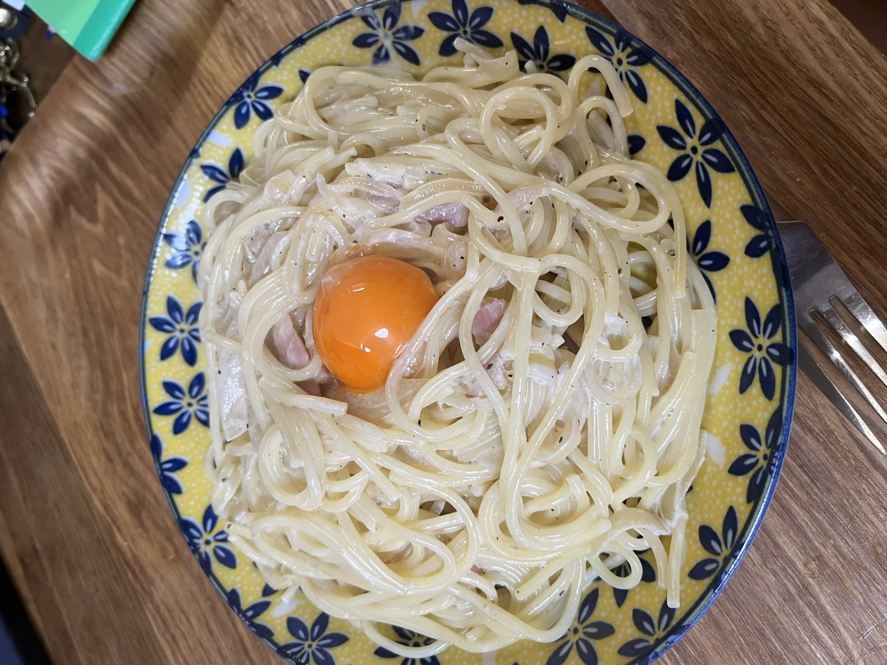

PAPAっと飯

【 材料 (1人前) 】
- 玉ねぎ（半玉）
- ベーコン（50g）
- 塩（少々）
- パスタ（100g）
- 生クリーム（120cc）
- パスタのゆで汁（少々）
- めんつゆ（少々）
- 卵黄（1つ）
- ブラックペッパー（お好みで）
【 作り方 】
- 玉ねぎを輪切りにする。
- ベーコンをフライパンで炒める。ベーコンの油が出てきたら、玉ねぎも入れて炒める。
- ２をしながら、お湯を沸かす。※ちょっとしょっぱいくらいまで塩を入れる。
- お湯が沸いたらパスタをゆでる。※袋時間より気持ち短めに
- ゆであがったパスタをフライパンにあげる。
- 生クリームを入れ、その後パスタのゆで汁を入れる。
- めんつゆを入れ、味を調える。
- 皿によそい、真ん中に卵黄を落とし、好みでブラックペッパーを。
【 お手軽度 】